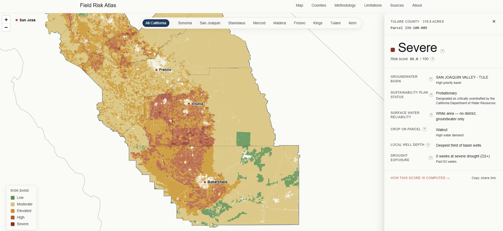

Which California ag parcels are most exposed to SGMA water restrictions?
Field Risk Atlas scores every farmable parcel in nine California counties — the San Joaquin Valley plus Sonoma — on water risk under the Sustainable Groundwater Management Act. Each parcel gets a 0–100 score and a five-band classification built from public DWR, USDA, U.S. Drought Monitor, and ASFMRA data. Free, open-methodology, parcel-level.

What this tool answers
Most public reporting on California water tells you what is happening in a basin or a district. The Field Risk Atlas works in the opposite direction: it starts from the parcel — the unit of ownership, lending, and underwriting — and asks what every public water-risk signal says about this specific field.
The atlas was built to answer questions like:
- Which California ag parcels carry the highest water risk under SGMA?
- Which subbasins are flagged as critical overdraft by DWR, and how do their GSPs stack up?
- Where do perennial high-water crops — almonds, pistachios, walnuts, grapes — sit on top of the most stressed groundwater?
- How does water-district reliability vary across the San Joaquin Valley?
- How does drought exposure compound the underlying SGMA risk?
How the water-risk score is calculated
Each parcel's 0–100 score combines five inputs:
- SGMA basin status. DWR's basin prioritization and the status of the subbasin's Groundwater Sustainability Plan — critical overdraft basins with weak or unapproved GSPs score worst.
- Water-district reliability. The parcel's surface-water-district allocation history. Districts with deep historical cutbacks shift more burden onto groundwater, which compounds SGMA exposure.
- Dominant crop class. Perennial high-water crops (tree nuts, vines) cannot be fallowed in a dry year the way annuals can, so they carry higher risk in stressed basins.
- Local well depth. A proxy for aquifer health and pumping cost. Deeper wells in the area signal more drawdown and higher operating cost going forward.
- Drought exposure. Recent U.S. Drought Monitor history at the parcel's county, which acts as a near-term stressor on top of the structural SGMA picture.
Inputs are normalized to a common 0–100 scale, weighted, and summed into the final parcel score. The result is binned into five bands so a non-specialist can read the map without needing to interpret the underlying weights:
| Severe | 80–100 | Worst-case stack — critical-overdraft basin, perennial high-water crop, weak water-district tier, drought. |
| High | 60–80 | Multiple stressors aligned. Active SGMA pressure expected. |
| Moderate | 40–60 | One or two material stressors. Worth monitoring across SGMA implementation milestones. |
| Watch | 20–40 | Some risk in the stack but largely insulated by surface-water reliability or basin status. |
| Low | 0–20 | Healthy basin, reliable district, low-water crop, shallow stable wells. |
Data sources
Every input is public and freely available:
| Source | What it provides | Cadence |
|---|---|---|
| California DWR | SGMA basin prioritization, GSP status, subbasin boundaries, well-depth data | Multi-year review cycle |
| USDA | Crop class and farmable-land coverage at the parcel level | Annual |
| U.S. Drought Monitor | County-level drought severity history | Weekly |
| ASFMRA | Land-use and ag-land reference data informing classification | Periodic |
Why parcel-level matters for SGMA
SGMA is implemented at the subbasin level, but the consequences land at the parcel level — on individual landowners, lenders, insurers, and crop buyers. Two parcels in the same subbasin can face very different risk profiles depending on the water district that serves them, the crop they grow, and the depth of nearby wells. A basin-level map averages those differences away. The Field Risk Atlas keeps them.
The cover is the nine counties that together contain most of California's SGMA-exposed perennial acreage: San Joaquin, Stanislaus, Merced, Madera, Fresno, Kings, Tulare, Kern across the San Joaquin Valley, plus Sonoma. That's roughly 375,000 farmable parcels, every one of them scored.
The full methodology, including each input's weight, every data join, and the band-cutoff logic, is documented at sgma.mcmillinanalytics.com/methodology and in the project repository.
Frequently asked questions
What is SGMA?
SGMA is California's Sustainable Groundwater Management Act, passed in 2014. It requires local agencies in high- and medium-priority groundwater subbasins to adopt Groundwater Sustainability Plans (GSPs) and bring those basins into long-term balance. In overdrafted basins, that almost always means pumping restrictions, allocation cuts, or fees on agricultural groundwater use.
Which California counties does this cover?
Nine counties: San Joaquin, Stanislaus, Merced, Madera, Fresno, Kings, Tulare, and Kern across the San Joaquin Valley, plus Sonoma. Together they contain roughly 375,000 farmable parcels.
Which crops are most exposed to SGMA pumping restrictions?
Perennial, high-water crops in critical-overdraft subbasins carry the most exposure: almonds, pistachios, walnuts, and grapes. They cannot be fallowed in response to a dry year — the trees are a 25-year capital investment. Specialty vegetables and leafy greens are also exposed where they rely on heavily pumped groundwater.
What does "Severe" mean in the band classification?
Severe is the highest of the five bands and corresponds to scores of 80 and above. It typically signals a parcel where multiple stressors are stacked: a critical-overdraft subbasin, a perennial high-water crop, a low-reliability water district, and recent drought exposure.
Is the Field Risk Atlas free?
Yes. The tool is free to use with no signup, and the methodology, data sources, and scoring logic are documented openly on GitHub. Every input is public.
How often does the data refresh?
The atlas ships as a snapshot, currently May 2026. SGMA inputs move on long cycles — GSPs are reviewed and amended on multi-year schedules, and water-district reliability changes year over year — so a snapshot cadence is appropriate to the underlying data. The drought-exposure input is refreshed at each snapshot release.